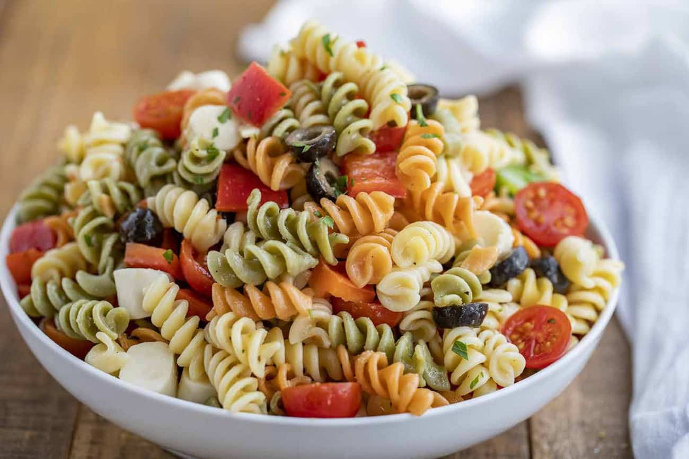

Pasta Salad

Description:
Experience a burst of simplicity and flavor with our Pasta Salad.
It's a delightful combination of al dente pasta and a colorful array of fresh vegetables,
brought together with a perfectly balanced dressing. Each bite is a symphony of textures and tastes,
making it a refreshing and satisfying choice for any occasion.
Whether you're in the mood for a light meal or a vibrant side dish,
our Pasta Salad delivers on both simplicity and deliciousness,
adding a touch of freshness to your table. Indulge in the culinary charm of our Pasta Salad,
where every forkful tells a story of uncomplicated joy.
The carefully crafted medley of textures and flavors transforms a simple dish into an experience.
Perfect for casual lunches or special gatherings, this Pasta Salad is a testament to the beauty of easy and delightful dining.
Let the vibrant colors and inviting aroma elevate your dining moments,
making our Pasta Salad a go-to option for those who appreciate the art of simple and satisfying cuisine.
Ingredients:
- Pasta: Choose your favorite type, cooked to al dente perfection.
- Fresh Vegetables:PInclude a colorful array such as cherry tomatoes, bell peppers, and cucumbers.
- Olives: Add a savory kick with a handful of your preferred olives.
- Feta Cheese: Crumble feta on top for a creamy and tangy flavor.
- Dressing: Create a zesty dressing using olive oil, herbs, and a touch of acidity like lemon juice.
- Salt and Pepper: To taste, for seasoning.
Feel free to adjust the quantities based on your preferences, and enjoy the delicious Pasta Salad!
Steps:
Cook the Pasta:
Boil a pot of water and add a pinch of salt.Cook the pasta until it's al dente, following the package instructions.Once cooked, drain and let it cool.Prepare Fresh Vegetables:
Wash and chop the cherry tomatoes, bell peppers, and cucumbers into bite-sized piecesand slice the olivesMake the Dressing:
In a bowl, whisk together olive oil, herbs (such as basil and oregano), and a squeeze of fresh lemon juice.
Season with salt and pepper to taste.Assemble the Pasta Salad:
In a large bowl, combine the cooked and cooled pasta with the chopped vegetables.Add olives and crumbled feta cheese.Drizzle with Dressing:
Pour the zesty dressing over the pasta and vegetables.Gently toss everything together until well coated.Chill and Serve:
Refrigerate the Pasta Salad for at least 30 minutes to let the flavors meld.
Serve chilled, allowing everyone to enjoy the refreshing combination of textures and tastes.
This Pasta Salad is not just a dish; it's an experience that brings joy to your dining moments. Enjoy the simple and satisfying cuisine!
HomePage